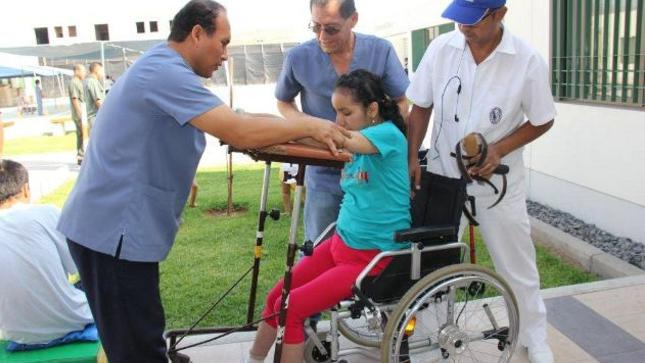
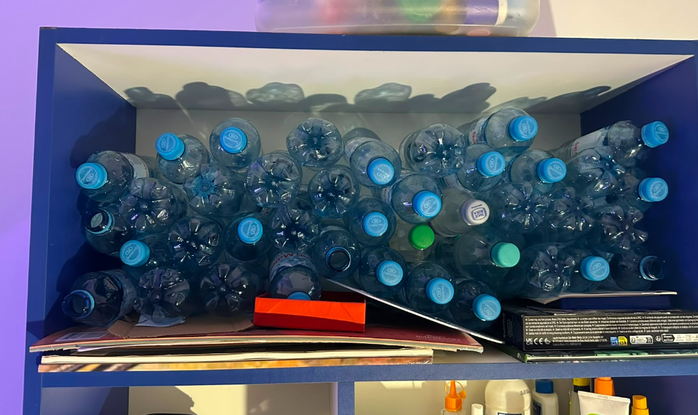
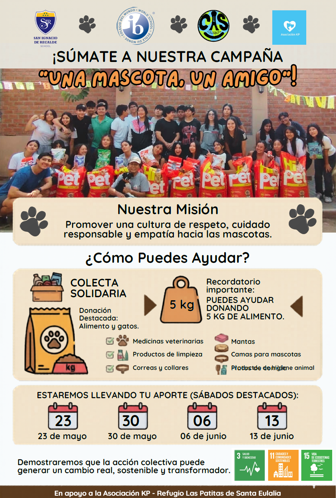
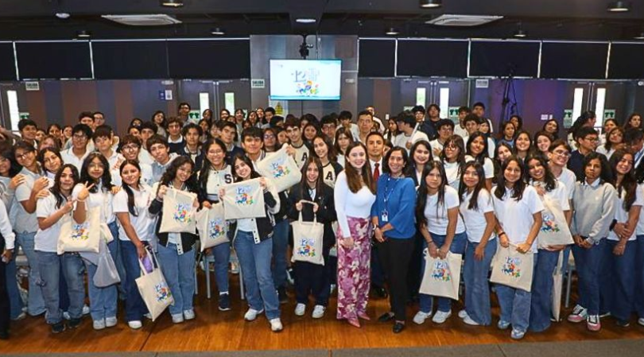
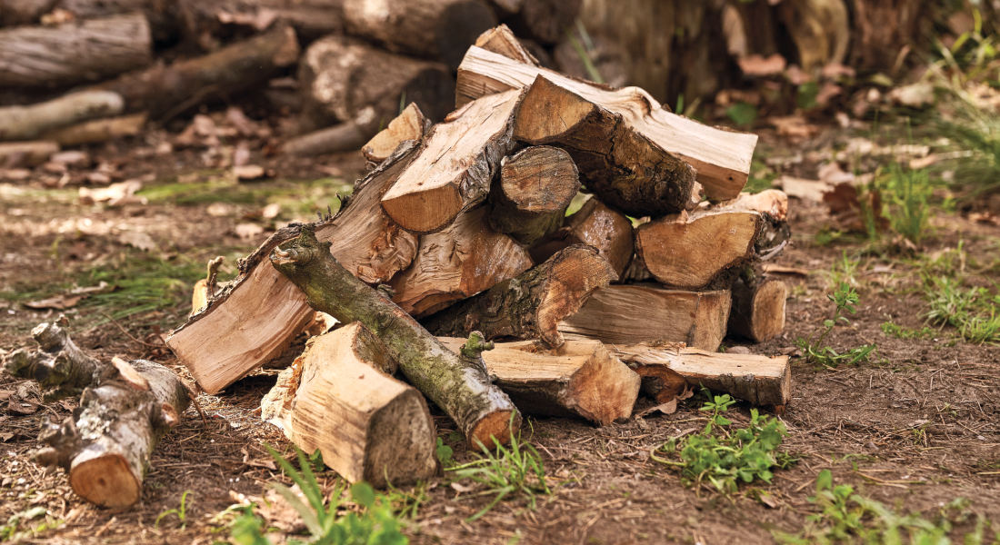
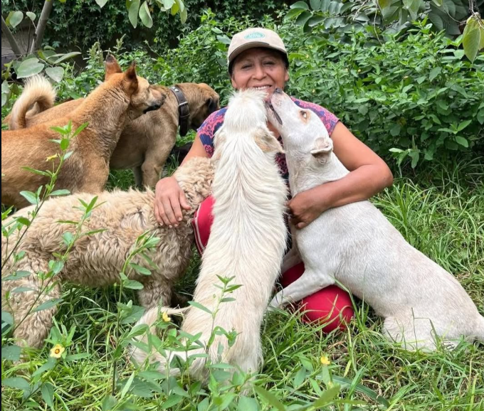

Participación en el proyecto de psicología
Colaboré en actividades del proyecto de psicología del colegio, reflexionando sobre el bienestar emocional y la importancia de escuchar y apoyar a otros.
Ver experiencia completa →Creatividad · Actividad · Servicio
Colaboré en actividades del proyecto de psicología del colegio, reflexionando sobre el bienestar emocional y la importancia de escuchar y apoyar a otros.
Ver experiencia completa →
Participé en la compra de rifas para apoyar económicamente a un refugio de perros, conectando el servicio con una causa social concreta.
Ver experiencia completa →
Tomé parte en la iniciativa ambiental «La hora del planeta», promoviendo el uso responsable de la energía y la conciencia ecológica.
Ver experiencia completa →
Exploré nuevas formas de aprender y enseñar, reflexionando sobre la creatividad y la adaptación en el proceso educativo.
Ver experiencia completa →
Participé en actividades de reciclaje dentro del colegio, fomentando hábitos sostenibles y el cuidado del medio ambiente.
Ver experiencia completa →
Como brigadista, organicé y apoyé la recolección de materiales reciclables, asumiendo un rol de liderazgo en el servicio comunitario.
Ver experiencia completa →
Empecé a practicar ciclismo como una actividad recreativa que me permite mantenerme activo y desarrollar perseverancia.
Ver experiencia completa →
Participé en charlas informativas dentro de los salones del colegio, concientizando a mis compañeros sobre la tenencia responsable y promoviendo la adopción de animales.
Ver experiencia completa →
Colaboré en la recolección y segregación de residuos sólidos en la institución, organizando los materiales reciclables para reducir nuestro impacto ambiental escolar.
Ver experiencia completa →
Apoyé activamente en el traslado físico y ordenamiento de troncos de leña en el albergue, asegurando el combustible necesario para preparar el alimento de los perritos.
Ver experiencia completa →
Llevé las donaciones que pude al refugio para apoyarlos con lo que uno puede.
Ver experiencia completa →Participé en el partido de exhibición de profesores y, como brigadista CAS, comuniqué a mi aula la fecha de donación, los materiales necesarios y la forma en que podían colaborar.
Ver experiencia completa →Presenté la rifa solidaria al aula asignada, explicando premios, precios, fechas y el propósito de la actividad para motivar una participación informada.
Ver experiencia completa →Doné dos gift cards de S/50 para los premios de la rifa y difundí la iniciativa entre mis familiares para ampliar el apoyo al proyecto solidario.
Ver experiencia completa →Acompañé a adultos mayores durante juegos, conversaciones y dinámicas, comprendiendo que el servicio también puede consistir en dedicar tiempo, escuchar y compartir con otras personas.
Ver experiencia completa →Reuní alimentos y juegos de mesa para los adultos mayores y pude entregarlos personalmente, conectando la donación con las personas que realmente recibirían la ayuda.
Ver experiencia completa →Elaboré a mano una bufanda para uno de los adultos mayores del albergue, dedicando tiempo y constancia hasta completar un objeto útil hecho personalmente.
Ver experiencia completa →